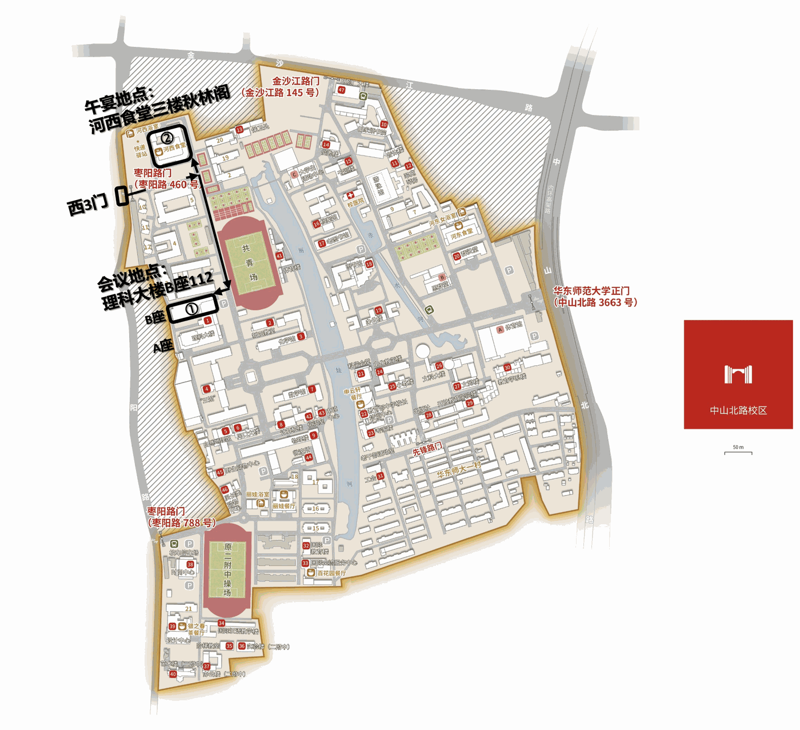
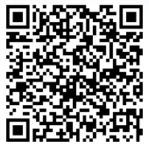
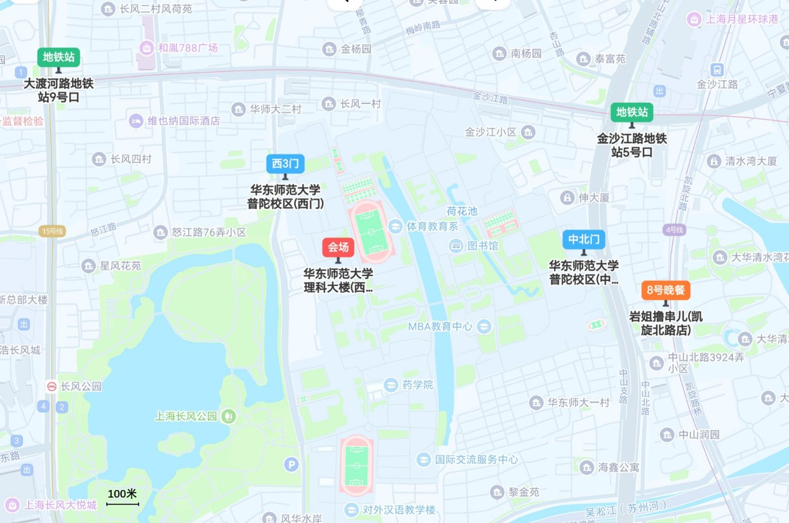
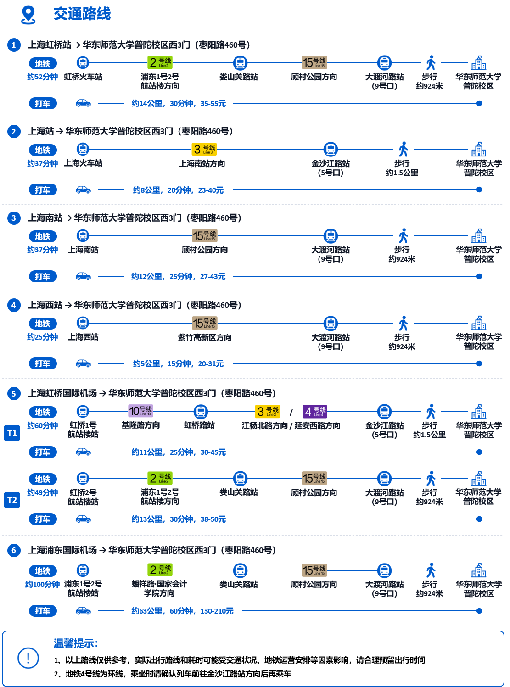

| 时间 | 安排 |
|---|---|
| 18:00 起 | 晚餐交流 地点：岩姐撸串儿·地摊老烧烤（凯旋北路店） 地址：上海市普陀区凯旋北路1772号（大华清水湾花园对面） |
主持人：谷守珍（华东师范大学） | 会议地点：华东师范大学普陀校区理科大楼B座112 | 午宴地点：河西食堂三楼秋林阁
| 时间 | 环节 | 内容 / 报告人 |
|---|---|---|
| 8:30-8:40 | 签到 | 线下签到与线上连线 |
| 8:40-9:00 | 开幕 | 开幕致辞：张桂戌 院长 |
| 9:00-10:20 | 线上专场（8场报告） 腾讯会议 495-518-256 |
|
| 10:20-10:50 | 自我介绍 | 参会人员自我介绍 |
| 10:50-11:05 | 茶歇 | 茶歇交流 |
| 11:05-11:35 | 大会报告一 | 沙行勉（华东师范大学） |
| 12:00-13:30 | 午宴 | 华东师范大学普陀校区河西食堂三楼秋林阁金桂厅 |
| 13:30-14:00 | 大会报告二 | 邵子立（香港中文大学） |
| 14:00-15:00 | 专题报告一（5场） |
|
| 15:00-15:15 | 茶歇 | 茶歇交流 |
| 15:15-16:15 | 专题报告二（6场） |
|
| 16:15-17:00 | 集体讨论 |
|

①会议地点：理科大楼B座112 ②午宴地点：河西食堂三楼秋林阁
名单持续更新中
| 姓名 | 单位 | 姓名 | 单位 |
|---|---|---|---|
| 郭大维 | 台湾大学 | 傅忱忱 | 东南大学 |
| 邵子立 | 香港中文大学 | 马殿龙 | 杭州华为企业通讯技术有限公司 |
| 胡京通 | 美国匹兹堡大学 | 崔晓通 | 重庆邮电大学 |
| 姜炜文 | 美国乔治梅森大学 | 李昌龙 | 华东师范大学 |
| 杨蕾 | 美国乔治梅森大学 | 段垚鑫 | 重庆邮电大学 |
| 张骏 | 美国亚利桑那州立大学 | 罗辉章 | 湖南大学 |
| 李乔 | 穆罕默德·本·扎耶德人工智能大学 | 聂文迪 | 重庆邮电大学 |
| 盛懿 | 美国南佛罗里达大学 | 底晔佳 | 杭州华为企业通讯技术有限公司 |
| 李金阳 | 美国迈阿密大学 | 吴挺 | 重庆邮电大学 |
| 薛进 | 华为香港研究所 | 吴超 | 南京理工大学 |
| 诸葛晴凤 | 华东师范大学 | 周梓梦 | 山东大学 |
| 石亮 | 华东师范大学 | 杨朝树 | 贵州大学 |
| 邱柯妮 | 首都师范大学 | 高聪明 | 厦门大学 |
| 郭毅博 | 郑州大学 | 张润宇 | 贵州大学 |
| 刘静 | 武汉科技大学 | 贾振格 | 山东大学 |
| 杜家宜 | 中南林业科技大学 | 吕熠娜 | 厦门大学 |
| 孙海涛 | 华东师范大学 | 许瑞 | 暨南大学 |
| 谷守珍 | 华东师范大学 | 宋玉红 | 鹏城国家实验室 |
| 龙林波 | 重庆邮电大学 | 王天雨 | 深圳大学 |
| 王艳 | 广州大学 | 王靖 | 华东师范大学 |
| 杜亚娟 | 武汉理工大学 | 贾敏 | 西北农林科技大学 |
| 纪程 | 南京理工大学 | 任天宇 | 清华大学 |
| 申兆岩 | 山东大学 | 黄克成 | 北京理工大学（珠海） |
| 陈咸彰 | 重庆大学 |
另有多位研究生、本科生参会
本次会议不收取注册费，请点击下方链接或扫描下方二维码填写报名问卷，以便会务组统计参会信息并做好会议安排。如参会信息发生变化，可重新提交问卷，以最后一次提交结果为准。

入校时请携带本人有效身份证件。持居民身份证的参会人员可刷证入校；持港澳台通行证、护照等其他证件的参会人员，请在校门口按要求登记后入校。如需开车进校，请在问卷中填写车牌号，会务组将统一预约车辆入校。

会场周边地图（红色标记为会场）
附会场周边部分住宿信息供参考，请大家自行联系预订，价格及房型以酒店实时信息为准。
校内宾馆：华东师范大学学术交流中心宾馆
地址：上海市中山北路3663号新逸夫楼学术交流中心
电话：+86-21-62601058
参考价格：双床房500元、大床房588元/间/晚（均含单早，加早38元/人）
| 酒店名称 | 距最近校门 | 参考价格（元/间/晚） |
|---|---|---|
| 维也纳国际酒店（上海金沙江路长风公园店） | 距西3门448米 | 300-400 |
| 呈岸酒店（上海华东师范大学大渡河路地铁站店） | 距西3门548米 | 300-400 |
| 喆啡酒店（上海环球港华师大店） | 距中山北路门187米 | 300-400 |
| 布丁严选酒店（上海华东师范大学金沙江地铁站店） | 距中山北路门202米 | 200-300 |
| 汉庭酒店（上海金沙江路地铁站店） | 距中山北路门336米 | 300-400 |
| 桔子酒店（上海金沙江路地铁站店） | 距中山北路门352米 | 400-500 |
| 上海舒芙酒店 | 距中山北路门644米 | 200-300 |
| 筎归酒店（上海中山公园金沙江路地铁站店） | 距中山北路门656米 | 300-400 |
| 上海环球港湾美居酒店 | 距中山北路门711米 | 600-700 |
下方交通路线图以西3门为定位点。若从中山北路门入校，可乘地铁3/4/13号线至金沙江路站（5号口），步行约417米即达。

【待补充】会议现场照片，会后更新。